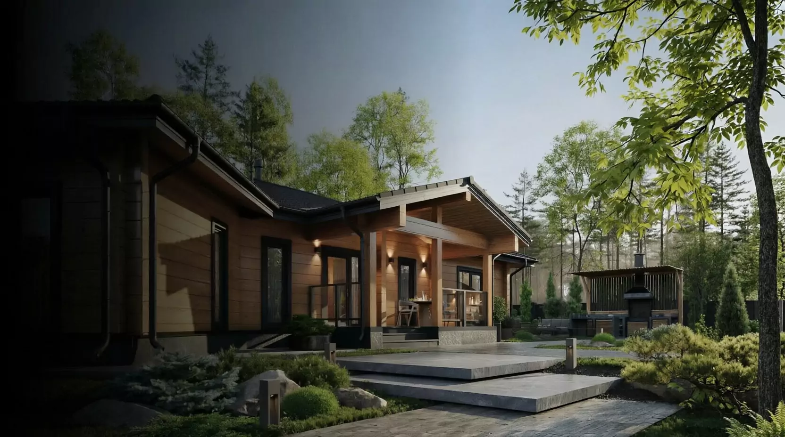
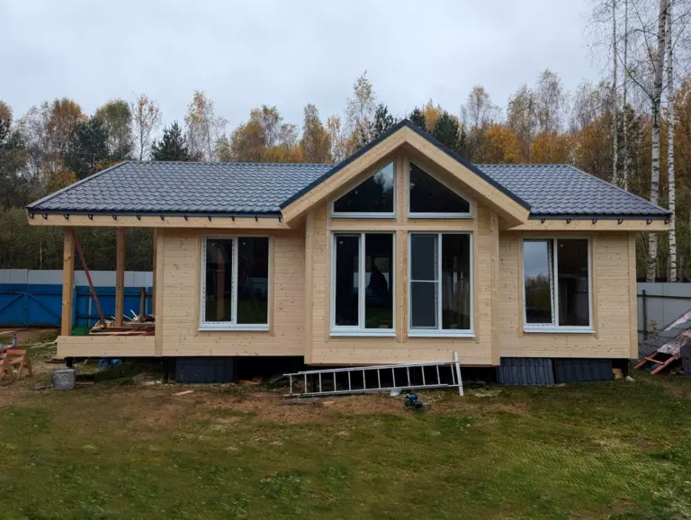

Строй Дом · Красноярск
Ваш дом.
От проекта до отделки.
Строим дома и бани из бруса и блоков в Красноярске. Поможем определить объём работ и рассчитать строительство.
Посмотреть домаПРИМЕРЫ РЕШЕНИЙ
Посмотрите,
что можно построить.
Выберите близкое решение, а планировку, материал и состав работ обсудим под ваш участок.

Архитектурная иллюстрация
Строй Дом · Красноярск
Архитектурная иллюстрация
Выберите близкое решение, а планировку, материал и состав работ обсудим под ваш участок.
Обсудить строительство